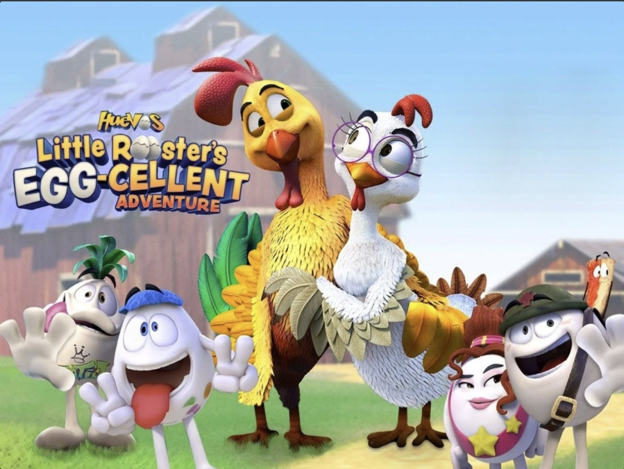
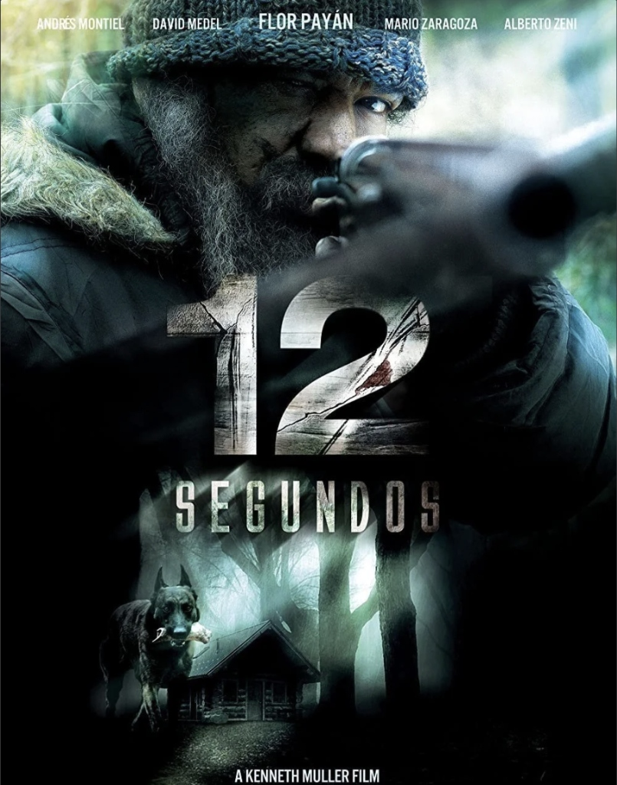
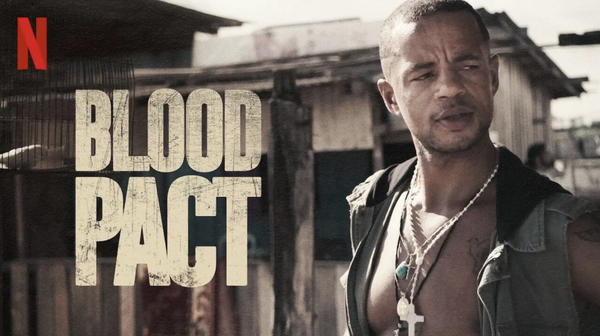

WORK & PRODUCTIONS
Industry Awards | Feature Films | Visual Effects Supervision | Broadcast Series
Over 25 years of executive production leadership directing teams of 100–400+ artists across the US, Mexico, and Brazil for Netflix, major film studios, and international broadcast networks.
Honors, Recognition & Industry Awards

Huevos: Little Rooster's Egg-cellent Adventure
Senior Production Manager & VFX SupervisorContributed to Huevo Cartoon Studios' first fully 3D animated feature. The franchise became the highest-grossing Mexican animated film series of all time (grossing over 167.8 million pesos). The original film won the prestigious Ariel Award (Mexico's Academy Award) in 2007 for Best Animated Feature Film.

12 Segundos — Festival Wins & Netflix Award
Co-Producer & VFX SupervisorWinner of 7 international awards including Best Film, Best Production, and Best Art Direction at the 2014 Ícaro Film Festival. The film also received a Netflix Award in 2015 and Special Mention for the Director at Ícaro.
Visual Effects Society (VES) Awards Judge
Active VES Member & Official Judge (2018–Present)Serving continuously since 2018 as an official judge for the annual Visual Effects Society (VES) Awards in Los Angeles, evaluating premier feature films, animated movies, television series, and real-time visual effects worldwide.
Featured Film & Television Productions

Netflix / Space Channel (USA)Blood Pact (Pacto de Sangue)
Senior Visual Effects Supervisor
Supervised over 260 complex VFX shots for this gritty 8-episode series detailing gang wars and police corruption in the Amazon. Working alongside Abduct Studios, we delivered invisible VFX shots with international quality standards on a tight schedule, integrating teams from the US, Mexico, and Brazil.
View on IMDb12 Seconds (12 Segundos)
Co-Producer | Senior VFX Supervisor | Colorist
A critically acclaimed thriller that became the most successful feature film in Guatemala's history. Secured a Netflix Award in 2015 and participated in major festivals including Cannes and Guadalajara.
View on IMDb